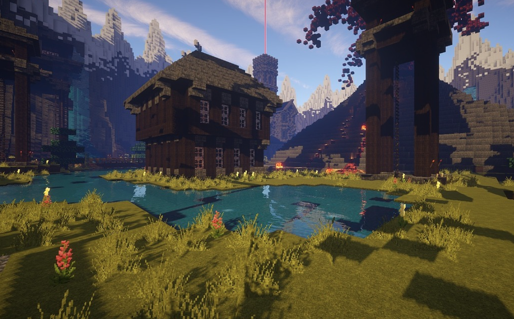

Have you ever been sitting at home on a cold, rainy day wondering what character from Danganronpa you would be? No? Well you're thinking of it right now, so take this quiz to figure out where you fall in the Danganronpa list. Will you be a arrogant, manipulative Byakuya Togami, or maybe a quiet and calm Chiaki Nanami?
1. Your 2 close friends start arguing with each other over where they want to eat. You...
2. How do you think of yourself?
3. Which is the closest to your personality type?
4. Your sibling is talking to you about their school issues. You...
5. Out of these choices, which is the most scary to you?
6. Which of these foods would you want to eat?
7. How do you feel about math?

8. Would you help an old lady cross the road?
9. If you could go on vacation, where would you want to go?